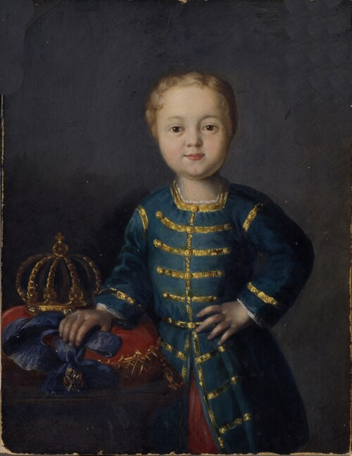

Иван VI Антонович — российский император из династии Романовых, правивший в младенческом возрасте. Он занял престол в 1740 году после смерти императрицы Анны Иоанновны и стал одним из самых трагических правителей в истории России.
Иван VI был провозглашён императором, когда ему было всего несколько месяцев. Из-за этого реальная власть находилась в руках регентов и приближённых дворян. Сначала государством управлял Эрнст Бирон, а позже — мать Ивана, Анна Леопольдовна.
Период правления Ивана VI сопровождался борьбой за власть между различными придворными группировками. Многие представители дворянства были недовольны влиянием иностранных приближённых при дворе и слабостью правительства.
В 1741 году дочь Петра I — Елизавета Петровна — совершила дворцовый переворот при поддержке гвардии. В результате Иван VI был свергнут, а власть перешла к новой императрице.
После потери престола Иван VI вместе с семьёй был отправлен в заключение. Большую часть своей жизни он провёл в изоляции и практически не участвовал в политической жизни страны.
Судьба Ивана VI считается одной из самых трагичных в истории Российской империи. Его короткое правление стало ярким примером нестабильности эпохи дворцовых переворотов XVIII века.
